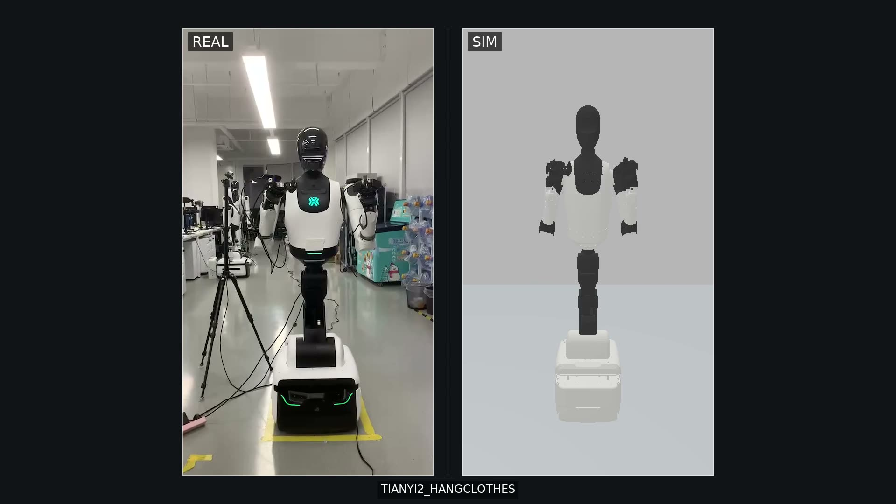
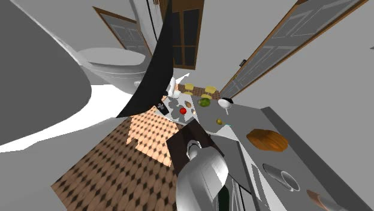
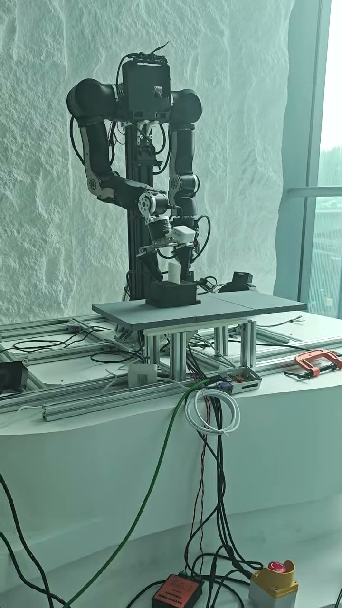
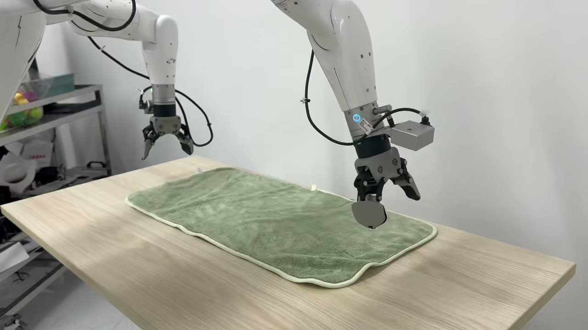
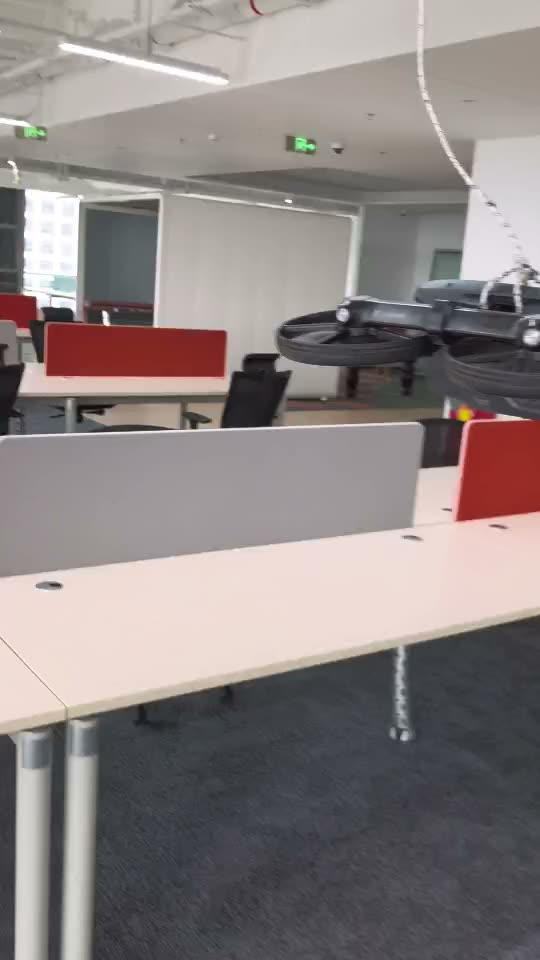

项目演示
核心问题：如何让生成式世界模型成为可部署、可泛化的机器人策略。以下为 4 段代表作（动图自动播放），点击任意动图进入完整画廊（21 段演示视频）。
北京人形 Sim2Real 闭环 · BAAI WAM 多视角预测 · 道通 VLA 真机 · 道通 BPTT 可微仿真
精选项目

Sim2Real / Real2Sim 数据闭环
北京人形 · 两平台 8 case 运动复现，REAL|SIM 视频对 0.01s 级对齐

WAM 多视角视频预测
BAAI · 多视角联合预测，head-camera frame 动作空间统一

OpenArms 双臂叠衣
BAAI · DiT4DiT 跨本体后训练，LIBERO 8D → OpenArms 16D

VLA 真机操作落地
道通 · 动态抓取成功率 40%+ → 70%+，LIBERO-10 平均 96.6%

BPTT 可微仿真与 Sim-to-Real
道通 · 公司首个实践验证 RL 控制器，获 10 万元项目奖金
实习经历
-
2026.08 – 至今北京人形机器人创新中心 · 具身智能算法实习生Sim2Real / Real2Sim 双向动作数据闭环：统一关节语义与时间轴，两平台 8 个 case 运动复现，REAL|SIM 视频对时长误差 0.01s 级；下一阶段 3DGS 场景重建与批量数据工厂。
-
2026.04 – 2026.08智源人工智能研究院（BAAI）认知大模型组 · 世界模型与机器人策略搭建 Video2World → PolicyDiT → ActionExpert 三阶段 WAM（Cosmos-Predict2.5-2B 教师），单次前向解码 30-step action chunk；DiT4DiT 跨本体后训练完成双臂叠衣。
-
2025.11 – 2026.04道通智能 · 强化学习算法工程师（前沿预研）OpenPI π₀.₅ VLA 真机落地（8 卡 A800 全量微调 + ROS2 端云部署，抓取成功率 40%→70%）；JAX BPTT 可微仿真控制器（获 10 万元奖金）；残差动力学精度提升 10 倍、吞吐提升 1000%；AutoResearch 调参效率提升 2.6 倍。
教育经历
| 时间 | 学校 | 学位 / 专业 | GPA |
|---|---|---|---|
| 2024.08 – 2027.06（预计） | 哈尔滨工业大学（深圳）· 机器人与先进制造学院 | 硕士 · 动力工程（保研） | 3.639 / 4.0（前 5%） |
| 2020.09 – 2024.06 | 吉林大学 · 汽车工程学院 | 本科 · 动力工程（已保研） | 3.826 / 4.0（前 5%） |
科研与项目
Colugo：多尺度潜在世界模型引导的 VLA 操作研究 · 协作研究
slow/fast queries 从 VLM hidden states 预测 latent futures，dual cross-attention 调制 flow-based Action DiT；完成 LIBERO-Long / CALVIN ABC→D / AgileX Nero 消融评测。
复合机器人月球探索 · 项目负责人
全向底盘 + 5-DOF 机械臂，RGB-D / LiDAR / IMU 自主建图与动态避障；中国机器人及人工智能大赛国家级一等奖（全场最快成绩）。
无人机抗风性能优化及底层控制 · 项目负责人
DNN/CNN 气动代理 + PPO 调参 + C++ 模糊 PID，扰动下轨迹追踪误差降低 76.6%。
核心技能
| 方向 | 具体内容 |
|---|---|
| 视频生成 / 策略建模 | Video2World、Diffusion / Flow Matching、VLA、future latent / latent dynamics、跨本体动作空间适配 |
| 训练与数据工程 | PyTorch、JAX、DeepSpeed、多机多卡 bf16；WebDataset、LeRobot/OXE、多源机器人数据统一与加权采样 |
| 评测与部署 | LIBERO / CALVIN 消融评测、JAX BPTT 与 Sim-to-Real；ROS2 端云推理、TensorRT/ONNX 部署 |
| 语言 | 英语 CET-4 545 / CET-6 464 |
荣誉奖项（节选）
- 国家奖学金（2 / 145）
- 黑龙江省优秀学生
- 哈工大（深圳）特等学业奖学金
- 工程实践与创新能力大赛「智能+」赛道全国金奖（组长）
- 中国机器人及人工智能大赛国家一等奖（全场最快）
- 全国大学生数学竞赛二等奖
- 周培源力学竞赛全国优秀奖
- 黎明人才奖学金 × 3（10 / 455）